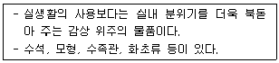
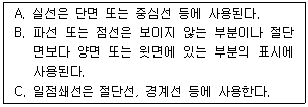
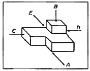
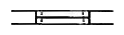

실내건축기능사 (2013-04-14 기출문제)
1과목: 실내디자인
1. 다음 중 인체계 가구에 속하는 것은?
- 스툴
- 책상
- 옷장
- 테이블
(정답률: 76%)

2. 천장과 함께 실내공간을 구성하는 수평적 요소로서 생활을 지탱하는 역할을 하는 것은?
- 벽
- 바닥
- 기둥
- 개구부
(정답률: 92%)
3. 리듬의 원리 중 잔잔한 물에 돌을 던지면 생기는 물결현상과 가자 관련이 깊은 것은?
- 방사
- 대립
- 균형
- 강조
(정답률: 91%)
4. 다음의 설명에 알맞은 장식물의 종류는?

- 예술품
- 실용적 장식품
- 장식적 장식품
- 기념적 장식품
(정답률: 91%)
5. 마르셀 브로이어가 디자인한 것으로 강철 파이프를 휘어 기본 골조를 만들고 가죽을 접합하여 만든 의자는?
- 바실리 의자
- 파이미오 의자
- 레드 블루 의자
- 바르셀로나 의자
(정답률: 79%)
6. 개방형 공간구성의 특징으로 가장 알맞은 것은?
- 공간사용의 유통성과 극대화
- 프라이버시 보장과 에너지 절약
- 조직화를 통한 시각적 모호함 제거
- 복수의 구성요소의 독립적 공간 확보
(정답률: 78%)
7. 기념비적인 스케일에서 일반적으로 느끼는 감정은?
- 엄숙함
- 친밀감
- 생동감
- 안도감
(정답률: 82%)
8. 펜로즈의 삼각형과 가장 관련이 깊은 착시의 유형은?
- 운동의 착시
- 크기의 착시
- 역리도형 착시
- 다의도형 착시
(정답률: 82%)
9. 약동감, 생동감 넘치는 에너지와 운동감, 속도감을 주나 너무 많으면 불안정한 느낌을 주는 선의 종류는?
- 사선
- 곡선
- 수직선
- 수평선
(정답률: 80%)
10. 주거공간을 주행동에 따라 개인공간, 작업공간, 사회적 공간 등으로 구분할 경우, 다음 중 개인공간에 속하지 않는 것은?
- 서재
- 부엌
- 침실
- 자녀방
(정답률: 93%)
11. 건축화조명의 종류에 속하지 않는 것은?
- 광창 조명
- 할로겐 조명
- 코니스 조명
- 밸런스 조명
(정답률: 76%)
12. 비슷한 형태, 규모, 색채, 질감, 명암, 패턴의 그룹을 하나의 그룹으로 지각하려는 형태의 지각심리는?
- 근접성
- 연속성
- 폐쇄성
- 유사성
(정답률: 79%)
13. 공간의 레이아웃 작업에 속하지 않는 것은?
- 동선계획
- 가구배치계획
- 공간의 배분계획
- 공간별 재료마감계획
(정답률: 72%)
14. 별장주택에서 볼 수 있는 유형으로 취사용 작업대가 하나의 섬처럼 실내에 설치되어 독특한 분위기를 형성하는 부엌은?
- 리빙 키친
- 다이닝 키친
- 키친 네트
- 아일랜드 키친
(정답률: 87%)
15. 주택계획서 주부의 동선을 단축시키는 방법으로 가장 적절한 것은?
- 부엌과 식탁을 인접 배치한다.
- 침실과 부엌을 인접 배치한다.
- 다용도실과 침실을 인접 배치한다.
- 거실을 한쪽으로 치우치게 배치한다.
(정답률: 91%)
16. 다음 중 실내공기오염물질인 포름알데히드를 발생시키는 발생원과 가장 거리가 먼 것은?
- 벽지
- 석면
- 건자재
- 접착제
(정답률: 41%)
17. 열쾌적강에 영향을 미치는 물리적 온열 4요소에 해당하지 않는 것은?
- 기온
- 습도
- 엔탈피
- 복사열
(정답률: 78%)
18. 건축적 채광방식 중 측창채광에 관한 설명으로 옳지 않은 것은?
- 비막이에 유리하다.
- 시공, 보수가 용이하다.
- 편측채광의 경우 조도분포가 불균일하다.
- 근린의 상황에 따라 채광을 방해받는 경우가 없다.
(정답률: 69%)
19. 세기와 높이가 일정한 음으로, 확성기나 마이크로폰의 성능 실험 등에 음원으로 사용되는 것은?
- 소음
- 진음
- 간헐음
- 잔향음
(정답률: 58%)
20. 다음 중 결로의 발생 원인과 가장 거리가 먼 것은?
- 잦은 환기
- 단열시공의 불완전
- 실내외의 큰 온도차
- 실내 습기의 과다발생
(정답률: 83%)
2과목: 실내환경
21. 건축재료의 물리적 성질 중 열전도율의 단위는?
- W/m·K
- W/m2·K
- kJ/m·K
- kJ/m2·K
(정답률: 77%)
22. 재료의 화학적 성질에 관한 설명으로 옳지 않은 것은?
- 알루미늄 새시는 콘크리트나 모르타르에 접하면 부식된다.
- 유성 페인트를 콘크리트나 모르타르면에 칠하면 줄무늬가 생긴다.
- 대리석을 외부에 사용하면 광택이 상실되어 장식적인 효과가 감소된다.
- 산을 취급하는 화학공장에서 콘크리트의 사용은 바닥의 얼룩을 방지해 준다.
(정답률: 61%)
23. 납(Pb)에 관한 설명으로 옳은 것은?
- 융정이 높다.
- 전·연성이 작다.
- 비중이 크고 연질이다.
- 방사선의 투과도가 높다.
(정답률: 50%)
24. 다음 중 목재의 부패조건과 가장 관계가 먼 것은?
- 강도
- 온도
- 습도
- 공기
(정답률: 69%)
25. 다음 중 열가소성 수지에 속하지 않는 것은?
- 요소수지
- 아크릴수지
- 염화비닐수지
- 폴리에틸렌수지
(정답률: 52%)
26. 보통포틀랜드시멘트보다 C2S나 석고가 많고, 분말도를 크게 하여 초기에 고강도를 발생하게 하는 시멘트는?
- 백색포틀랜드시멘트
- 조강포틀랜드시멘트
- 저열포틀랜드시멘트
- 중용열포틀랜드시멘트
(정답률: 80%)
27. 합성수지 재료 중 우수한 투명성, 내후성을 활용하여 톱 라이트, 온수 풀의 옥상, 아케이드 통에 유리의 대용품으로 사용되는 것은?
- 실리콘 수지
- 폴리에틸렌 수지
- 폴리스티렌 수지
- 폴리카보네이트
(정답률: 40%)
28. 콘크리트의 크리프에 관한 설명으로 옳지 않은 것은?
- 재해재령이 빠를수록 크리프는 크다.
- 물시멘트비가 클수록 크리프는 크다.
- 시멘트페이스트가 많을수록 크리프는 작다.
- 재하 초기에 증가가 현저하고, 장기화될수록 증가율은 작게 된다.
(정답률: 56%)
29. 슬럼프 테스트에 관한 설명으로 가장 알맞은 것은?
- 콘크리트의 강도를 측정하는 시험이다.
- 콘크리트의 공기량을 측정하는 시험이다.
- 콘크리트의 재료분리를 측정하는 시험이다.
- 콘크리트의 콘시스텐시를 측정하는 시험이다.
(정답률: 68%)
30. 목재제품 중 합판에 관한 설명으로 옳지 않은 것은?
- 균일한 강도의 재료를 얻을 수 있다.
- 함수율 변화에 따른 팽창·수축의 방향성이 없다.
- 단판을 섬유방향이 서로 평행하도록 흡수로 적층하여 만든 것이다.
- 뒤틀림이나 변형이 적은 비교적 큰 면적의 평면 재료를 얻을 수 있다.
(정답률: 45%)
3과목: 실내건축재료
31. 콘크리트용 골재로서 요구되는 일반적인 성질로 옳은 것은?
- 모양이 편평하고 세장한 것이 좋다.
- 모양이 구형에 가까운 것으로, 표면이 매끄러운 것이 좋다.
- 입도는 조립에서 세립까지 연속적으로 균등히 혼합되어 있어야 한다.
- 골재의 강도는 콘크리트 중의 경화시멘트 페이스트의 강도보다 작아야 한다.
(정답률: 50%)
32. 점토의 일반적인 성질에 관한 설명으로 옳지 않은 것은?
- 양질의 점토는 습윤 상태에서 현저한 가소성을 나타낸다.
- 일반적으로 점토의 압축강도는 인장강도의 약 5배 정도이다.
- 점토 제품의 색상은 철산화물 또는 석회물질에 의해 나타난다.
- 점토의 비중은 불순 점토일수록 크고, 알루미나분이 많을수록 작다.
(정답률: 58%)
33. 다음 중 점토제품이 아닌 것은?
- 테라코타
- 내화벽돌
- 도기질 타일
- 코펜하겐 리브
(정답률: 74%)
34. 강의 열처리 방법에 속하지 않는 것은?
- 불림
- 풀림
- 압연
- 담금질
(정답률: 74%)
35. 변성암의 일종으로 석질이 불균일하고 다공질이며 주로 특수실내장식재로 사용되는 석재는?
- 현무암
- 화강암
- 응회암
- 트래버틴
(정답률: 73%)
36. 블로운 아스팔트를 용제에 녹인 것으로 아스팔트 방수의 바탕 처리재료 사용되는 방수재료는?
- 아스팔트 펠트
- 아스팔트 루핑
- 아스팔트 콤파운드
- 아스팔트 프라이머
(정답률: 55%)
37. 소다석회유리 일반적 성질에 관한 설명으로 옳지 않은 것은?
- 풍화되기 쉽다.
- 내산성이 높다.
- 내알칼리성 높다.
- 건축 일반용 창호유리에 사용된다.
(정답률: 51%)
38. 미장재료 중 석고 플라스터에 관한 설명으로 옳지 않은 것은?
- 원칙적으로 해초 또는 풀즙을 사용하지 않는다.
- 경화·건조시 치수 안정성이 뛰어나 균열이 없는 마감을 실현할 수 있다.
- 석고 플라스터 중에서 가장 많이 사용하는 것은 크림용 석고 플라스터이다.
- 경석고 플라스터는 고온소성의 무수석고를 특별한 화학처리를 한 것으로 경화 후 아주 단단하다.
(정답률: 47%)
39. 석재의 인력에 의한 표면가공 순서로 옳은 것은?
- 흑두기 – 정다듬 – 도드락다듬 – 잔다듬 – 물갈기
- 흑두기 – 도드락다듬 – 정다듬 – 잔다듬 – 물갈기
- 정다듬 – 흑두기 – 잔다듬 – 도드락다듬 – 물갈기
- 흑두기 – 잔다듬 – 정다듬 – 도드락다듬 – 물갈기
(정답률: 82%)
40. 다음 중 내알칼리성이 가장 우수한 도료는?
- 유성페인트
- 유성바니시
- 알루미늄페인트
- 염화비닐수지도료
(정답률: 69%)
41. 제도 연필의 경도에서 무르기로부터 굳기의 순서대로 옳게 나열한 것은?
- HB – B – F – H – 2H
- B – HB – F – H – 2H
- B – F – HB – H – 2H
- HB – F – B – H – 2H
(정답률: 70%)
42. 철골구조에 사용되는 부재 중 사용되는 위치가 다른 하나는?
- 베이스 플레이트(Base plate)
- 리브 플레이트(Rid plate)
- 거셋 플레이트(Gusset plate)
- 윙 플레이트(Wing plate)
(정답률: 55%)
43. 건축도면 제도 시 치수 기입법에 대한 설명 중 옳지 않은 것은?
- 전체 치수는 바깥쪽에, 부분 치수는 안쪽에 기입한다.
- 치수는 치수선의 중앙에 기입한다.
- 치수는 cm단위를 원칙으로 한다.
- 마무리 치수로 기입한다.
(정답률: 88%)
44. 시공과정에 따른 분류에서 습식 구조끼리 짝지어진 것은?
- 목구조 – 돌구조
- 돌구조 – 철골구조
- 벽돌구조 – 블록구조
- 철골구조 – 철근콘크리트구조
(정답률: 61%)
45. 표준형 벽돌에서 칠오토막의 크기로 옳은 것은?
- 벽돌 한 장 길이의 1/4 토막
- 벽돌 한 장 길이의 1/3 토막
- 벽돌 한 장 길이의 1/2 토막
- 벽돌 한 장 길이의 3/4 토막
(정답률: 68%)
46. 철골구조의 용접접합에 대한 설명으로 옳은 것은?
- 철골의 용접은 주로 금속 아크용접이 많이 쓰인다.
- 강재의 재질에 대한 영향이 적다.
- 용접부 내부의 결함을 육안으로 관찰할 수 있다.
- 용접공의 기능에 따른 품질의존도가 적다.
(정답률: 57%)
47. 투시도법의 종류 중 평행 투시도법이라고도 불리우며, 일반적으로 실내투시도 작성 시 사용되는 것은?
- 1소점 투시도법
- 2소점 투시도법
- 3소점 투시도법
- 유각 투시도법
(정답률: 71%)
48. 널 등을 모아대어 바닥 등에 넓게 까는 목재의 접합법은?
- 쪽매
- 이음
- 맞춤
- 장부
(정답률: 48%)
49. 건축설계도면에서 전개도에 관한 설명 중 옳지 않은 것은?
- 각 실 내부의 의장을 명시하기 위해 작성하는 도면이다.
- 각 실에 대하여 벽체 및 문의 모양을 그려야 한다.
- 축척은 1/200 정도로 한다.
- 벽면의 마감재료 및 치수를 기입하고, 창호의 종류와 치수를 기입한다.
(정답률: 63%)
50. 아래 보기에서 선에 대한 설명으로 옳은 것을 모두 고르면?

- A
- B
- B, C
- A, B, C
(정답률: 59%)
4과목: 건축일반
51. 주택의 평면도에 표시되어야 할 사항이 아닌 것은?
- 가구의 높이
- 기준선
- 벽, 기둥, 창호
- 실의 배치와 넓이
(정답률: 75%)
52. 다음 중 목구조의 단점으로 옳은 것은?
- 큰 부재를 얻기 어렵다.
- 공기가 길다.
- 비강도가 작다.
- 시공이 어렵고, 시공 시 기후의 영향을 많이 받는다.
(정답률: 55%)
53. 목구조에서 사용되는 수평 부재가 아닌 것은??
- 층도리
- 처마도리
- 토대
- 대공
(정답률: 53%)
54. 건축도면 중 입면도에 표시되는 내용과 가장 관계가 먼 것은?
- 대지현상
- 마감재료명
- 주요구조부의 높이
- 창문의 모양
(정답률: 69%)
55. 아래 그림은 3각법으로 그린 투상도이다. 투상면의 명칭에 대한 설명으로 옳은 것은?

- A 방향의 투상면은 배면도이다.
- B 방향의 투상면은 평면도이다.
- C 방향의 투상면은 우측면도이다.
- D 방향의 투상면은 좌측면도이다.
(정답률: 78%)
56. 철근콘크리트보에서 전단력을 보강하기 위해 보의 주근 주위에 둘러 배치한 철근은?
- 나선철근
- 띠철근
- 배력근
- 늑근
(정답률: 53%)
57. 그림과 같은 평면 표시기호는?

- 접이문
- 망사문
- 미서기창
- 붙박이창
(정답률: 65%)
58. 침실 공간에 대한 설명으로 옳은 것은?
- 자녀 침실은 어두운 공간에 배치한다.
- 노인이 거주하는 실은 출입구에서 먼 쪽에 배치한다.
- 부부침실은 조용하고 아늑한 느낌을 가지도록 한다.
- 아동실은 북쪽으로 배치하고 부엌과 인접하도록 한다.
(정답률: 83%)
59. 평면도는 보통 바닥면으로부터 몇 m 높이에서 절단한 수평투상도를 말하는 것인가?
- 0.5m
- 1.2m
- 2.0m
- 2.2m
(정답률: 76%)
60. 철골구조와 비교한 철근콘크리트 구조의 단점이 아닌 것은?
- 내화성이 떨어진다.
- 구조물 완성 후 내부 결함의 유무를 검사하기 어렵다.
- 중량이 크다.
- 균열이 쉽게 발생한다.
(정답률: 53%)